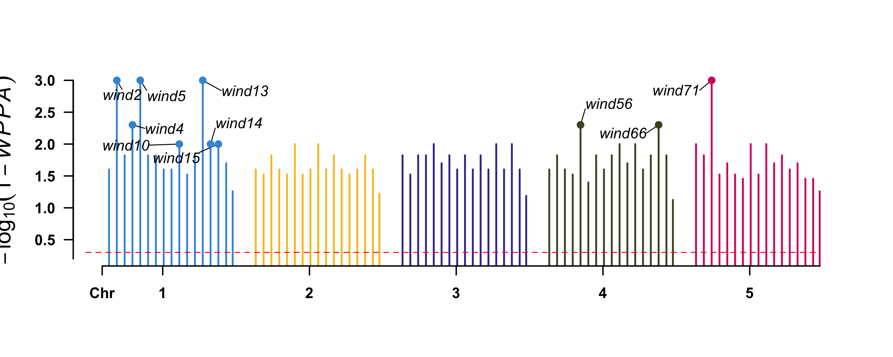
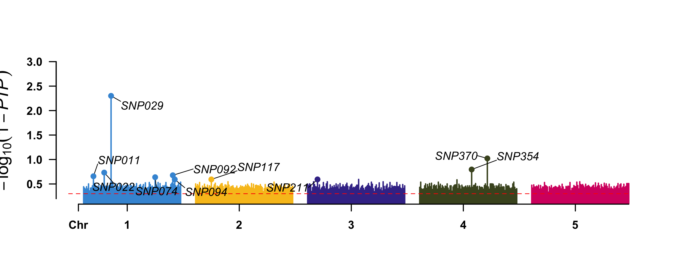
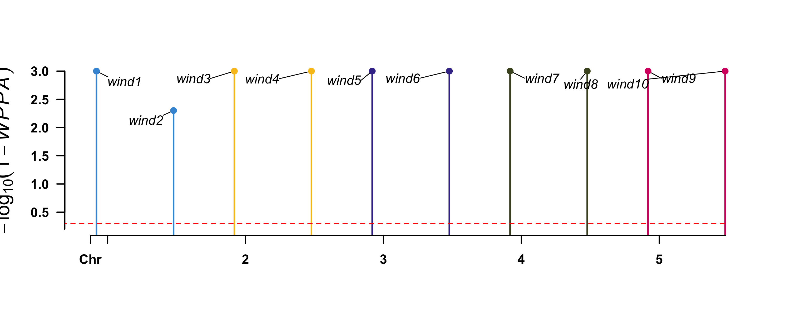
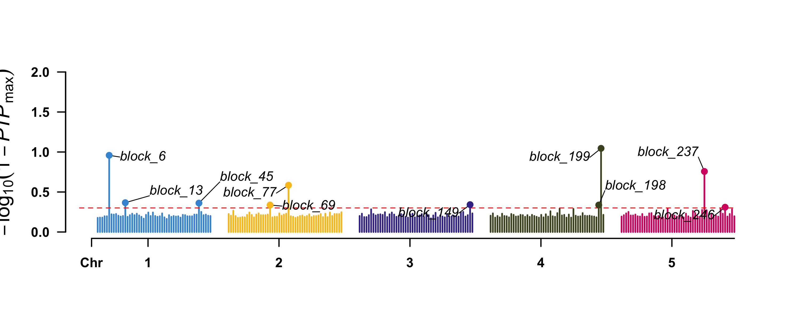

library(masbayes)
library(knitr)
d <- load_data("large")
# Tutorial-scale MCMC params; production should use n_iter = 20000+
mcmc <- list(n_iter = 2000L, n_burn = 1000L, n_thin = 5L, seed = 42L)
# Manhattan label cap. BayesR PIP/WPPA saturate on this demo data (most
# markers exceed 0.5), so labelling every one above the threshold makes
# CMplot's text placement hang. Label only the top-n peaks instead.
n_label <- 10LGWAS with masbayes
This tutorial extracts GWAS-style output from a BayesR MCMC fit: per-marker posterior inclusion probabilities (PIPs) and windowed posterior probabilities of association (WPPA) over physical-position windows. Both come for free from the posterior mixture-class samples — no separate scan is needed. The full source is adapted from masbayes/examples/04_gwas.R.
Important
MCMC required. PIPs and WPPA are derived from the posterior class trajectories (gamma_samples). The EM path of BayesR produces only MAP point estimates; passing method = "em" with a map argument errors out. Use method = "mcmc" for the entire workflow.
Important
BayesA has no equivalent. The scaled-\(t\) marginal places no mass on exactly zero, so PIP is not defined for BayesA. run_bayesa(..., map = ...) errors out by design. For frequentist GWAS, see the masreml page.
Setup
SNP-based variable selection with BayesR
Step 1 — Build the design matrix
y_snp <- d$pheno$y_cont_qtl_snp
snp <- construct_snp_matrix(d$snp, encoding = "zscore")
W_snp <- snp$W
map_snp <- d$map_snpStep 2 — Fit BayesR with the marker map attached
Passing a map data frame plus either windsize (bp window) or windnum (consecutive-marker window) tells run_bayesr() to also compute PIPs and WPPA from the posterior samples. The Rust sampler is untouched; the extra output is post-processed on the R side from the existing gamma_samples matrix.
============================================================
masbayes — BayesR with MCMC algorithm
============================================================
Response type : gaussian
Observations : n = 200, alleles p = 500
Runtime : 0.68 seconds
Heritability (h2): 0.422
MCMC Diagnostics
----------------------------------------
Parameter ESS Geweke Z
sigma2_e 110.0 -0.05
mu 200.0 -1.61
beta (median) 200.0 0.06
----------------------------------------
Run summary(fit) for full report.
============================================================Step 3 — Top windows by WPPA
| Wind | Chr | N | Start | End | WPPA | |
|---|---|---|---|---|---|---|
| 2 | wind2 | 1 | 6 | 1600000 | 2100000 | 1.000 |
| 5 | wind5 | 1 | 6 | 3400000 | 3900000 | 1.000 |
| 13 | wind13 | 1 | 6 | 8200000 | 8700000 | 1.000 |
| 71 | wind71 | 5 | 6 | 2200000 | 2700000 | 1.000 |
| 4 | wind4 | 1 | 6 | 2800000 | 3300000 | 0.995 |
| 56 | wind56 | 4 | 6 | 3400000 | 3900000 | 0.995 |
| 66 | wind66 | 4 | 6 | 9400000 | 9900000 | 0.995 |
| 10 | wind10 | 1 | 6 | 6400000 | 6900000 | 0.990 |
| 14 | wind14 | 1 | 6 | 8800000 | 9300000 | 0.990 |
| 15 | wind15 | 1 | 6 | 9400000 | 9900000 | 0.990 |
WPPA is the fraction of posterior samples in which at least one marker inside the window had non-zero effect. It is the natural Bayesian analogue of the windowed-posterior column produced by masreml::run_gwas().
Step 4 — Manhattan: \(-\log_{10}(1 - \mathrm{WPPA})\)
wppa_cap <- 1 - 1e-3
snp_wppa_df <- data.frame(
Wind = fit_snp$gwas$Wind,
Chr = fit_snp$gwas$Chr,
Pos = (fit_snp$gwas$Start + fit_snp$gwas$End) / 2,
`1-WPPA` = 1 - pmin(fit_snp$gwas$WPPA, wppa_cap),
check.names = FALSE
)
snp_wppa_hl <- as.character(
fit_snp$gwas$Wind[order(-fit_snp$gwas$WPPA)][seq_len(min(n_label, nrow(fit_snp$gwas)))])
CMplot::CMplot(
snp_wppa_df,
type = "h",
plot.type = "m",
LOG10 = TRUE,
threshold = 0.5,
threshold.lty = 2,
threshold.col = "red",
amplify = FALSE,
highlight = snp_wppa_hl,
highlight.text = snp_wppa_hl,
highlight.col = NULL,
file.output = FALSE,
verbose = FALSE,
ylab = expression(-log[10](1 - italic(WPPA)))
)
Step 5 — Manhattan: per-SNP PIP
snp_pip_df <- data.frame(
SNP = map_snp$SNP,
Chr = map_snp$CHROM,
Pos = map_snp$POS,
`1-PIP` = 1 - pmin(fit_snp$pip, wppa_cap),
check.names = FALSE
)
snp_pip_hl <- as.character(
map_snp$SNP[order(-fit_snp$pip)][seq_len(min(n_label, length(fit_snp$pip)))])
CMplot::CMplot(
snp_pip_df,
type = "h",
plot.type = "m",
LOG10 = TRUE,
threshold = 0.5,
threshold.lty = 2,
threshold.col = "red",
amplify = FALSE,
highlight = snp_pip_hl,
highlight.text = snp_pip_hl,
highlight.col = NULL,
file.output = FALSE,
verbose = FALSE,
ylab = expression(-log[10](1 - italic(PIP)))
)
Common PIP interpretation rules:
| PIP range | Interpretation |
|---|---|
| < 0.05 | No evidence of effect |
| 0.05 – 0.10 | Weak / suggestive |
| 0.10 – 0.50 | Moderate — worth follow-up |
| > 0.50 | Strong — likely true positive |
| > 0.95 | Decisive — calibration limit of the prior |
Microhaplotype-based variable selection
For phased microhaplotype input, the map schema changes — one row per block (not per allele).
y_mh <- d$pheno$y_cont_qtl_mh
bid <- attr(d$mh, "block_id")
wah <- construct_wah_matrix(d$mh, bid, d$allele_freq)
W_mh <- wah$W_ah
map_mh <- d$map_mh
============================================================
masbayes — BayesR with MCMC algorithm
============================================================
Response type : gaussian
Observations : n = 200, alleles p = 735
Runtime : 0.69 seconds
Heritability (h2): 0.329
MCMC Diagnostics
----------------------------------------
Parameter ESS Geweke Z
sigma2_e 83.8 -0.17
mu 200.0 1.41
beta (median) 200.0 0.00
----------------------------------------
Run summary(fit) for full report.
============================================================| Wind | Chr | N | Start | End | WPPA | |
|---|---|---|---|---|---|---|
| 1 | wind1 | 1 | 26 | 1050000 | 6050000 | 1.000 |
| 3 | wind3 | 2 | 26 | 1050000 | 6050000 | 1.000 |
| 4 | wind4 | 2 | 24 | 6250000 | 10850000 | 1.000 |
| 5 | wind5 | 3 | 26 | 1050000 | 6050000 | 1.000 |
| 6 | wind6 | 3 | 24 | 6250000 | 10850000 | 1.000 |
| 7 | wind7 | 4 | 26 | 1050000 | 6050000 | 1.000 |
| 8 | wind8 | 4 | 24 | 6250000 | 10850000 | 1.000 |
| 9 | wind9 | 5 | 26 | 1050000 | 6050000 | 1.000 |
| 10 | wind10 | 5 | 24 | 6250000 | 10850000 | 1.000 |
| 2 | wind2 | 1 | 24 | 6250000 | 10850000 | 0.995 |
Note
Block-level PIP via max-per-block. fit_mh$pip_block is a union statistic (probability that at least one allele in the block is non-zero); on small block sizes this inflates and can put every block above the 0.5 threshold. We use max-per-block PIP instead — bounded by the maximum per-allele PIP within the block — which gives sharper QTL vs non-QTL discrimination.
mh_wppa_df <- data.frame(
Wind = fit_mh$gwas$Wind,
Chr = fit_mh$gwas$Chr,
Pos = (fit_mh$gwas$Start + fit_mh$gwas$End) / 2,
`1-WPPA` = 1 - pmin(fit_mh$gwas$WPPA, wppa_cap),
check.names = FALSE
)
mh_wppa_hl <- as.character(
fit_mh$gwas$Wind[order(-fit_mh$gwas$WPPA)][seq_len(min(n_label, nrow(fit_mh$gwas)))])
CMplot::CMplot(
mh_wppa_df,
type = "h",
plot.type = "m",
LOG10 = TRUE,
threshold = 0.5,
threshold.lty = 2,
threshold.col = "red",
amplify = FALSE,
highlight = mh_wppa_hl,
highlight.text = mh_wppa_hl,
highlight.col = NULL,
file.output = FALSE,
verbose = FALSE,
ylab = expression(-log[10](1 - italic(WPPA)))
)
mh_pip_df <- data.frame(
Block = map_mh$block_id,
Chr = map_mh$chr,
Pos = (map_mh$start_pos + map_mh$end_pos) / 2,
`1-PIP_max` = 1 - pmin(max_pip_block, wppa_cap),
check.names = FALSE
)
mh_pip_hl <- as.character(
map_mh$block_id[order(-max_pip_block)][seq_len(min(n_label, length(max_pip_block)))])
CMplot::CMplot(
mh_pip_df,
type = "h",
plot.type = "m",
LOG10 = TRUE,
threshold = 0.5,
threshold.lty = 2,
threshold.col = "red",
amplify = FALSE,
highlight = mh_pip_hl,
highlight.text = mh_pip_hl,
highlight.col = NULL,
file.output = FALSE,
verbose = FALSE,
ylab = expression(-log[10](1 - italic(PIP)[max]))
)
QTL recovery sanity check
The demo data ships with ground-truth QTL positions, so we can verify the BayesR scan recovers them — median PIP at true QTL should be substantially higher than at non-QTL markers.
unit_index_mh <- match(attr(W_mh, "block_id"), map_mh$block_id)
qtl_blocks <- unique(unit_index_mh[d$qtl$mh_idx])
kable(data.frame(
path = c("SNP (per-marker PIP)",
"Microhaplotype (per-block max PIP)"),
pip_at_QTL = c(median(fit_snp$pip[d$qtl$snp_idx]),
median(max_pip_block[qtl_blocks])),
pip_non_QTL = c(median(fit_snp$pip[-d$qtl$snp_idx]),
median(max_pip_block[-qtl_blocks]))
), digits = 3,
caption = "Median PIP at true QTL vs non-QTL markers")| path | pip_at_QTL | pip_non_QTL |
|---|---|---|
| SNP (per-marker PIP) | 0.66 | 0.645 |
| Microhaplotype (per-block max PIP) | 0.42 | 0.375 |
Accessing the fit object
fit_snp$pip # per-marker PIP (length = ncol(W_snp))
fit_snp$pip_block # per-block PIP (length = nrow(map))
fit_snp$gwas # window data frame: Wind, Chr, N, Start, End, WPPA
fit_snp$gwas_meta # call metadata: windsize, windnum, n_windows, ...
fit_snp$beta_samples # full posterior trace, n_kept x ncol(W) (MCMC only)See also
-
run_bayesr()— full signature including themap,windsize,windnumarguments - Theory → BayesR — mixture prior, PIP diagnostics, \(\hat\pi_0\) interpretation
- GWAS with masreml — frequentist EMMAX-style alternative
- Genomic prediction with masbayes — use the same BayesR fit for prediction
-
masbayes/examples/04_gwas.R— full source for this tutorial